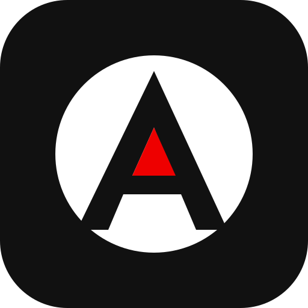
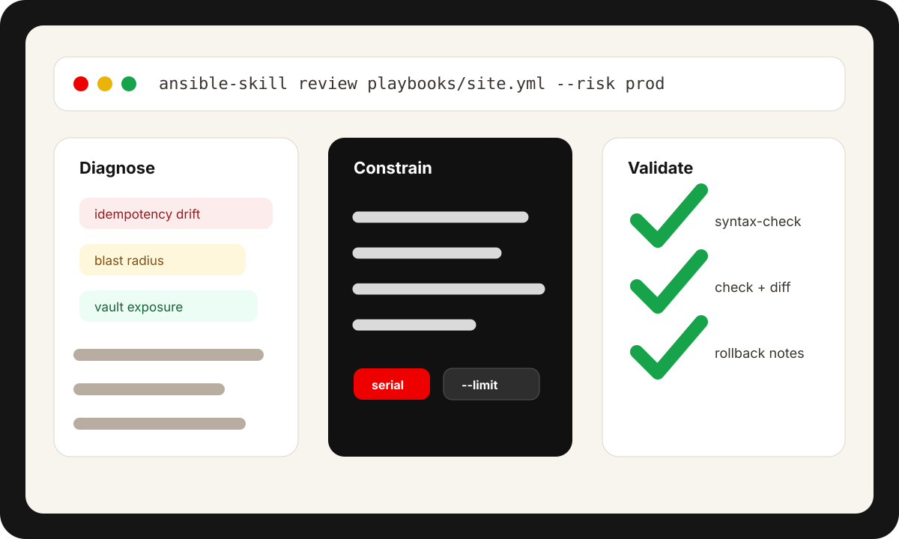

Codex
codex plugin marketplace add olandodeflexy/ansible-skill

ANSIBLE SKILLReview playbooks, roles, inventory, Vault, execution environments, and CI/CD workflows with explicit idempotency evidence, blast-radius controls, validation, and rollback notes.
install
codex plugin marketplace add olandodeflexy/ansible-skill
claude plugin marketplace add olandodeflexy/ansible-skill
claude plugin install ansible-skill@olandodeflexy
Already inside Claude Code? Use `/plugin install github:olandodeflexy/ansible-skill`.
workflow
Ansible Skill routes each request through the failure mode first, then produces remediation with controls that operators can actually verify.

Classify the risk: idempotency drift, inventory scope, secret exposure, precedence bugs, runtime mismatch, or CI blind spots.
Choose `serial`, `max_fail_percentage`, `--limit`, check-mode coverage, and handler behavior before recommending a run.
Return concrete commands for lint, syntax-check, `--check --diff`, Molecule, ansible-test, and rollback verification.
comparison
| Capability | Ansible Skill | Generic prompt | Lint only |
|---|---|---|---|
| Risk routing | 9 categories | Ad hoc | No |
| Blast-radius controls | Required | Inconsistent | Partial |
| Idempotency evidence | Per task | Usually missing | Rule based |
| Rollback notes | Required | Optional | No |
| Release packaging | Codex + Claude | No | No |